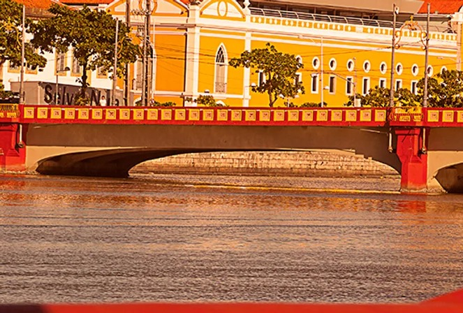
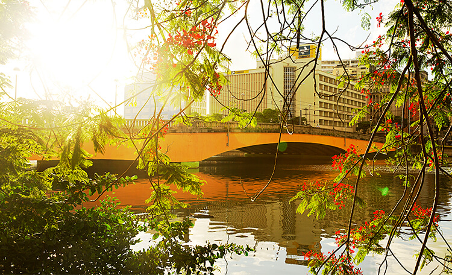

|

|
Ponte Mauricio de Nassau
Denominada ponte do Recife até o ano de 1865, liga o bairro de Santo Antônio ao bairro do Recife antigo. Foi a primeira ponte de madeira construída sobre o rio Capibaribe, e a primeira ponte de grande porte no Brasil, inaugurada em 28 de fevereiro de 1643, sob a administração do príncipe holandês Maurício de Nassau. Esta ponte sofreu várias reformas e melhoramentos nos anos de 1683 e 1742, e em 1865 foi substituída por uma de ferro, que se chamou Ponte 7 de Setembro, mas teve pouca durabilidade, por conta da maresia e da rápida deterioração. Em 1917, sob a administração do governo de Manoel Borba, foi reconstruída em concreto armado e reinaugurada com o nome Ponte Maurício de Nassau , que se encontra em bom estado de conservação até hoje.
|
Ponte Duarte Coelho
A ponte Duarte Coelho é uma importante estrutura histórica que atravessa o Rio Capibaribe . Construída em 1892 , a ponte é um marco da engenharia e arquitetura da época, sendo um exemplo notável da influência da arquitetura metálica do século XIX . A ponte foi projetada pelo engenheiro José Estelita e apresenta um estilo eclético, com elementos ornamentais de ferro fundido , arcos metálicos e grandes decorações . Sua importância histórica e estética a tornou um ícone na paisagem urbana do Recife , sendo um local de grande valor cultural para a cidade.
|

|